「区块链周报第三期」DEX2.0大战一触即发，谁能撼动Hyperliquid王座？[09/15-09/21]
BTC/ETH/ADA/BNB 价格
BTC 114300-118000 3000点的区间，冲高遇到阻力位回落过程中
三个代币的价格走势几乎和比特币一致，都是处于一个慢慢涨然后回调的状态，个人感觉是降息预期落地之后的诱多行情，不可能说确定了降息就一路向上那么简单的事情
BTCUSD - TradingView
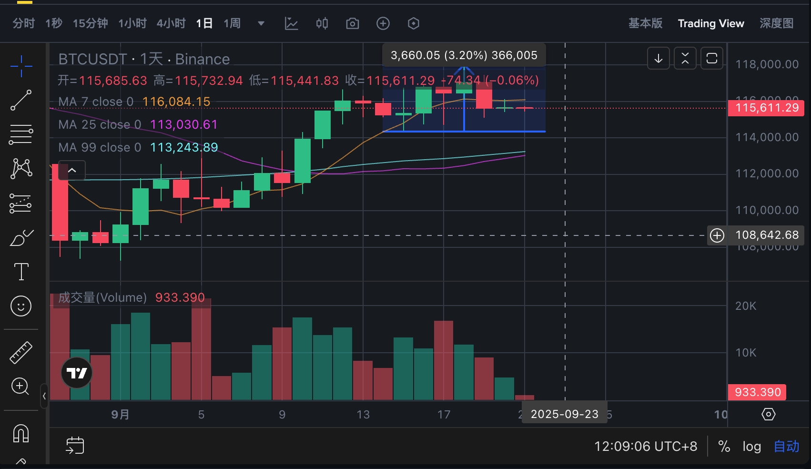
ETH 4400-4700 冲高回落
ETHUSD - TradingView
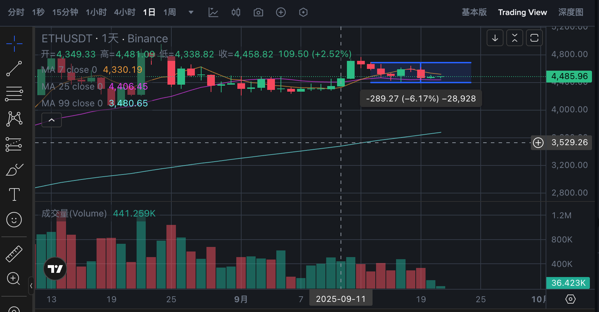
ADA 0.85-0.94 冲高回落
ETHUSD - TradingView
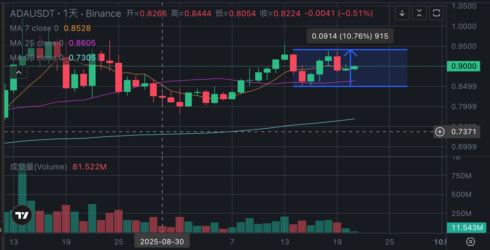
利好落地，冲高回落，诱多再阴跌，估计已经洗下车了一些追高的高杠杆的人
这一期又新增了一个币就是BNB，因为这段时间尤其是这周BNB的表现非常亮眼
910-1080 20%的涨幅
由aster带动bsc生态代币上涨，cake也涨了很多
BNBUSD - Binance
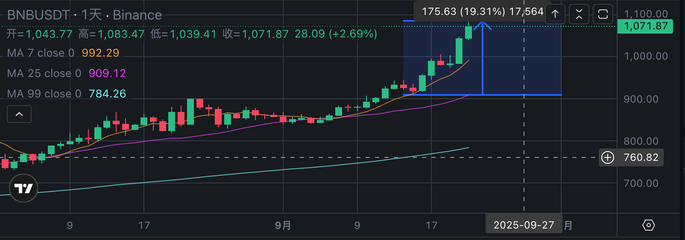
千元入场，百万回报 —— BNB破千美元背后的钻石之手传奇
https://x.com/cz_binance/status/1968597908413923352
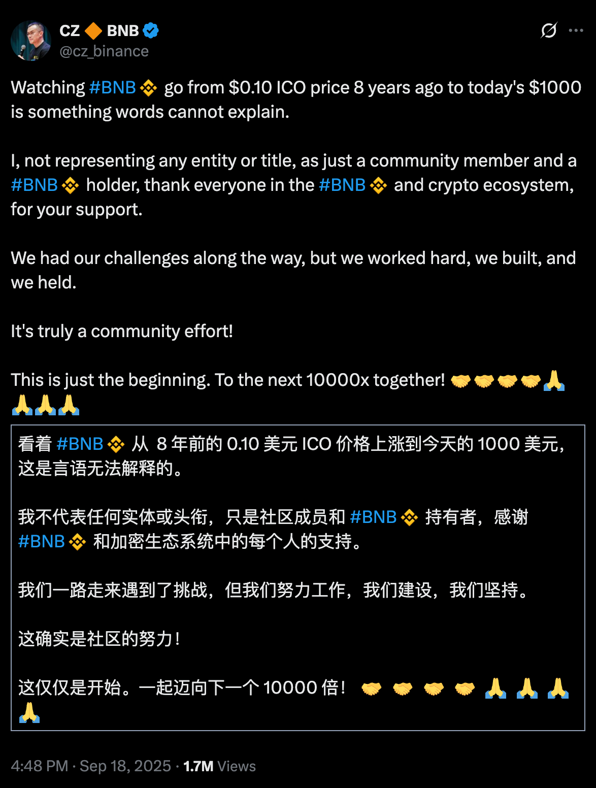
相关推文：
https://x.com/lookonchain/status/1968620305988923411
围观地址：
https://intel.arkm.com/explorer/address/0x8503FA99f2e7410e904F050849F8234091E1D108
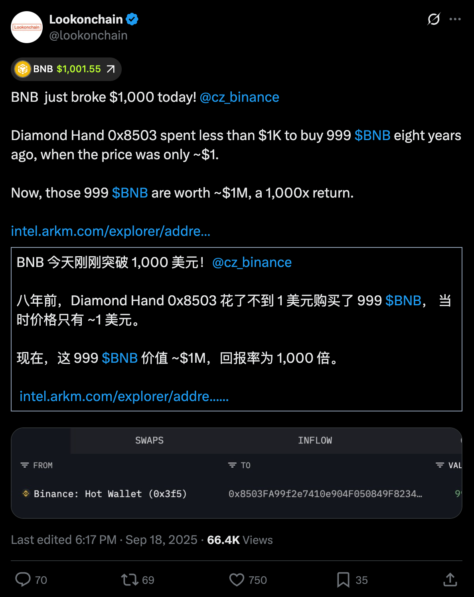
我想起来CZ的两句话：
If you can't hold, you won't be rich
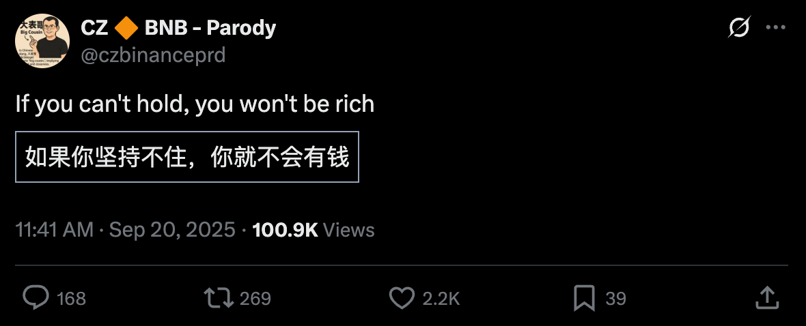
Investing in crypto is risky, Not investing in crypto is also risky
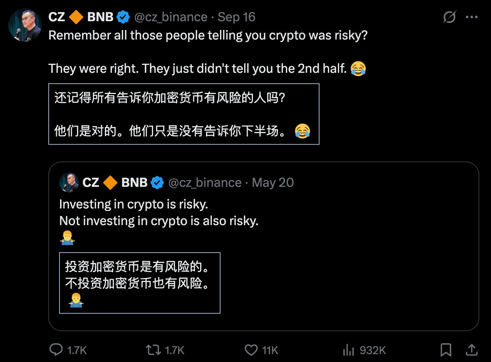
5天20倍，Aster为什么这样拉盘？
这就是商战和风口，恐怖如斯～
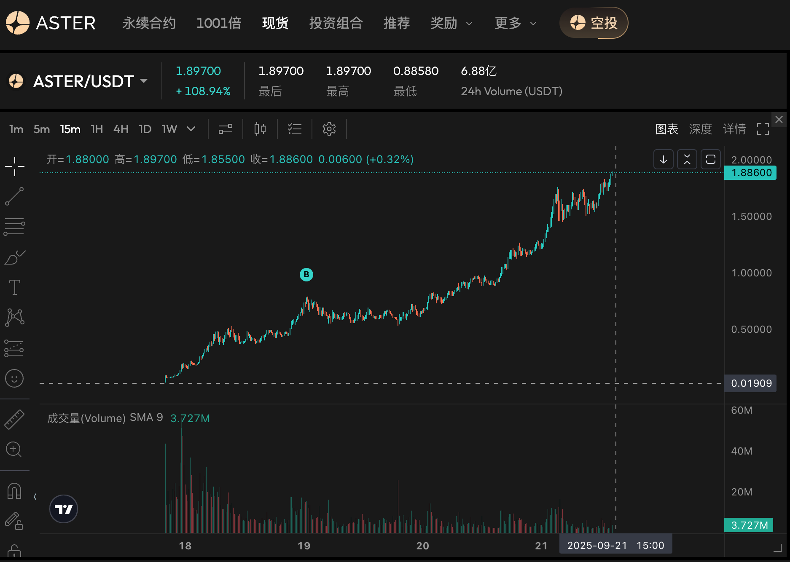
9月17号晚上八点Aster上线以来到现在不到五天的时间，0.1到2已经涨了最高20倍
这个项目在今年五月份我就开始关注到，tge前我还在上一期的区块链周报提到过，tge后也有跟朋友聊到过。
我空投是给了3200个代币，最开始在五月份的时候看到项目就刷了几笔交易存了一点usdf，只坚持了一个星期，三分钟热度之后就没有碰过这个项目了，给了3200个币真的非常的惊喜。也是一直拿到了现在
为什么我能拿得住呢？其实也挺误打误撞的。
这个币的涨势大概是这样的，上币之前就说可以用apx一比一兑换，当时价格是0.9到0.11左右震荡
然后我觉得后面这个aster会有炒作，于是在tge前三天布局了apx，那时候价格0.1，当时想着币安站台肯定会有炒作和拉盘。然后等到上线前两个小时我看从0.1跌到了0.09，我的信念便开始动摇了，便想着tge之后肯定会有很多空投砸盘，然后我就把拿了三天亏损10%的币卖了。然后上线之后我准备去网站上把3200个币卖了等低点再接回来，谁知道打开网站点击现货直接跳转404，多次尝试之后，我打开x搜索发现评论区很多喷产品垃圾的，我也喷了两句然后干别的事情了。
网站出错推文
谁知道干完事情发现0.1跌倒0.07之后拉到块0.2了，我便想着观望下，又加仓了一点点。睡前就在想 aster现在属于盘前交易 这个币未来肯定不止一倍 别的币随便说出去都是十几倍
谁知道睡一觉起来cz一奶就拉飞了。
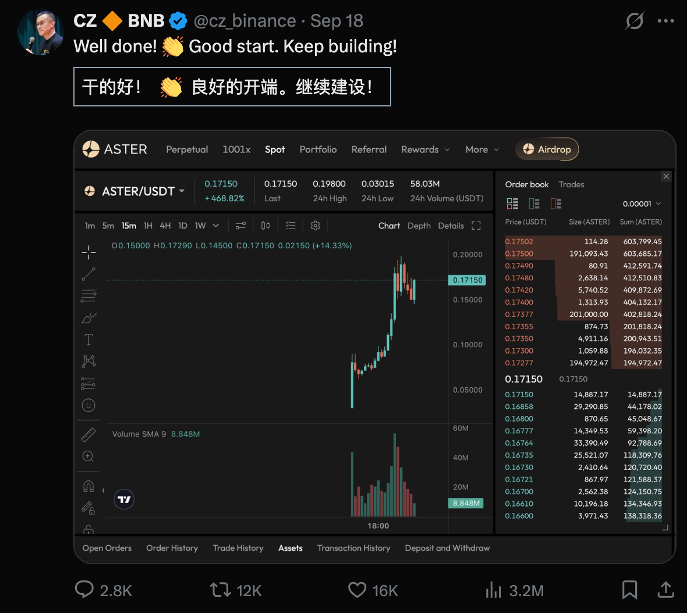
币圈一天，人间一年。我想着炒作一旦开始，越早进入就越有优势。炒作的点还有很多比如各大交易所上币，现货和激励政策等。于是便一直拿着没卖，一直到现在2又回调到1.6，最高有接近20倍的收益。3200个币从最开始只值300u到最高价值接近6000u。满感叹的。一切都是误打误撞，有认知，但不多，更多的是运气。
因为最开始我在使用他们网站的时候体验非常的不好，甚至我还在他们的推文下面喷他们，截图如下。
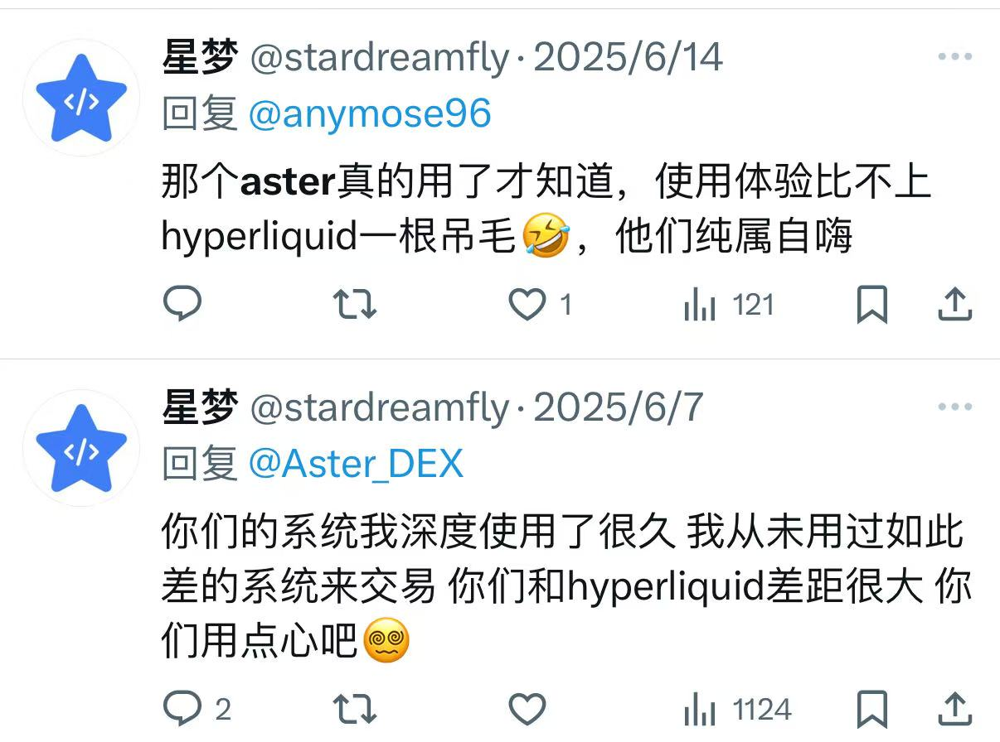
这样的行情依旧有人在做空！【个人认为：比特币遇到118000阻力位回撤到115000并且有企稳现象，aster，bnb这些很可能随着btc到时候突破一起冲锋，却还是有人要来做空aster，市值也不是很大，拉盘难度并不大】
「Hyperliquid第一大ASTER空头头寸」平仓割肉129.3万枚ASTER后重新加仓315.3万枚，浮亏179.8万美元
某鲸鱼「卖飞」质押两年907万枚APX，错失1270万美元利润
知名YouTuber MrBeast首次使用Aster，存入逾11.4万枚USDT
记得前面看到有期视频有人问MrBeast如果能回到十年前会做什么，MrBeast说要买比特币。
没有天花板的涨势，却依旧有很多人要来做空。
个人觉得还是有很大的空间的，区块链最重要的是去中心化，dex2.0刚刚好
DEX2.0发动机还没热起来呢一堆人就要做空了，哎，难说，没有绝对的对错，没有人可以预测市场
当然同时也有风险，比如说大多的dex还没有公开协议，还是使用的类似于cex的方式，对于用户来说还是黑盒。也可以理解，因为目前这个争夺战其实也开始不久，正处于快速迭代的时期。
DEX2.0大战一触即发，谁能撼动Hyperliquid王座？
什么是DEX2.0，他与DEX的区别是什么呢？
传统的DEX可能就是uniswap这样的去中心化交易所，可以进行代币的兑换
现在的2.0是去中心化永续合约交易所，Hyperliquid在前段时间由于多个巨鲸开单一战成名
目前有哪些链上perp？Hyperliquid，Aster，SunPerp，lighter
backpack【CEX但是有积分空投预期】
OKX会有动静吗？
我觉得可能已经开始了，要么差不多就会放出来，要么等监管信息明确
OKX CEO Star：因监管顾虑未上线类似Hyperliquid产品，希望该行业获得清晰监管框架
Tom Lee 策略分析师行情分析，这周末逢低加仓？
是否是底部？拭目以待
Tom Lee旗下基金分析师：本周末逢低买入ETH，预计10月中旬前将涨至5500美元
BlockBeats 消息，9 月 16 日，BitMine 转发旗下基金分析师 Mark Newton 的市场观点，其表示：「预计 ETH 不会跌破之前的低点 4233 美元，本周末可能回落至 4418 美元或 4375 美元，届时会利用这一弱势行情进行逢低买入。ETH 预计在十月中旬前上涨至 5500 美元。」
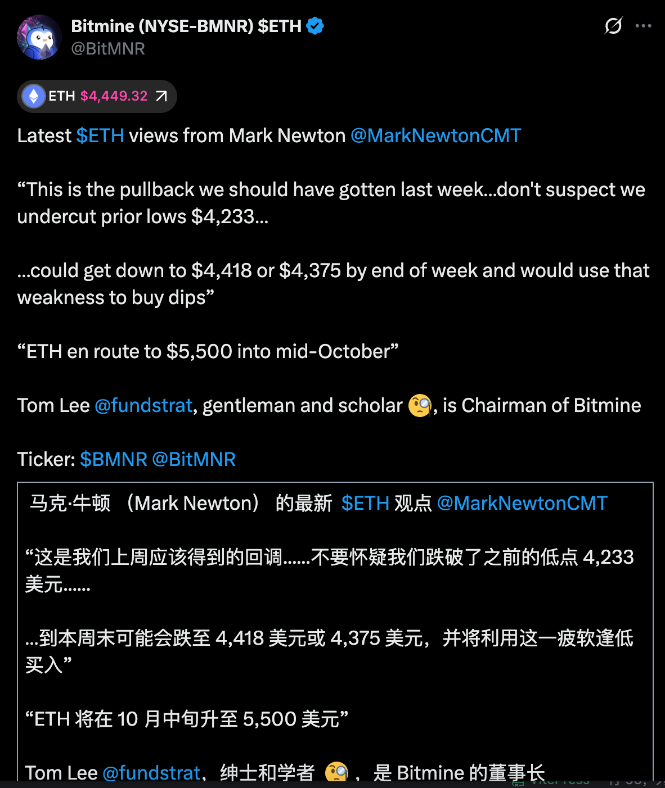
FOMC会议上下插针，降息25基点已成定局
凌晨两点左右波动很大，4400到4500上下插针
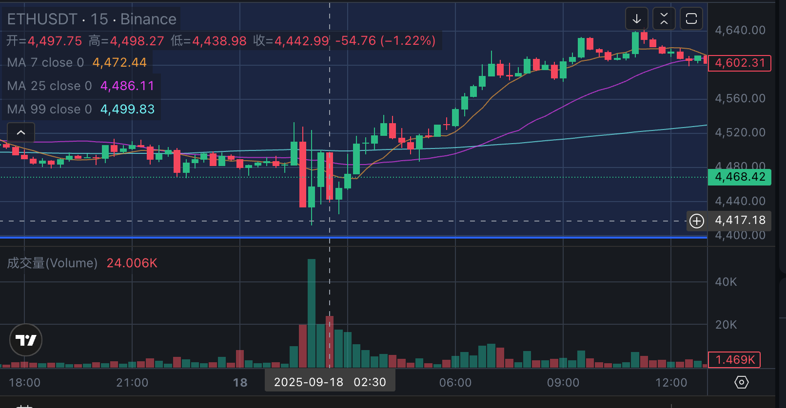
十月降息几率猜测：
25 bps decrease 86%
No change 11%
50+ bps decrease 4.2%
25+ bps increase <1%
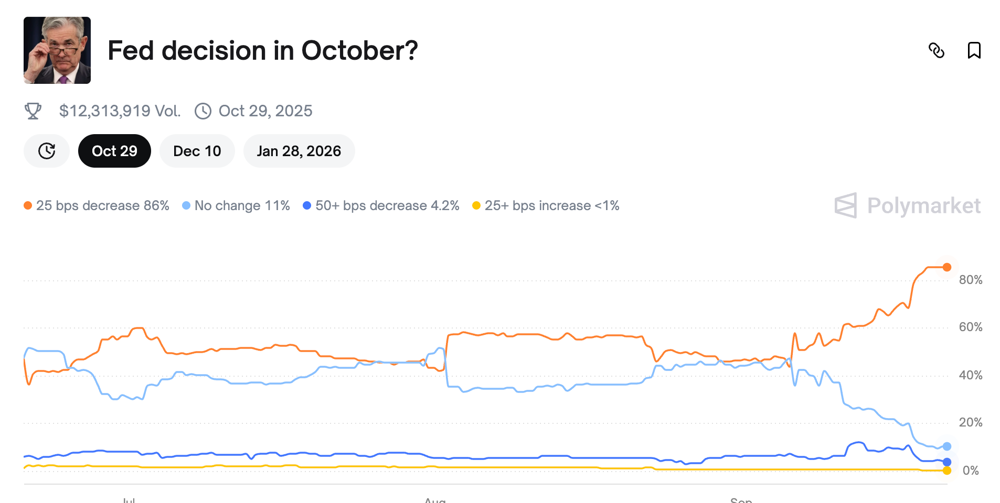
下周重要事件
[!TIP]来源链接：
下周宏观展望：美联储官员密集发声，周四公布美国就业和GDP数据
周一 21:45，FOMC 永久票委、纽约联储主席威廉姆斯就货币政策和经济前景发表讲话；22:00，2025 年 FOMC 票委、圣路易联储主席穆萨莱姆就美国经济前景和货币政策发表讲话；
周二 00:00，2026 年 FOMC 票委、克利夫兰联储主席哈玛克就美国经济发表讲话；2027 年 FOMC 票委、里奇蒙联储主席巴尔金就经济形势发表讲话；22:00，2027 年 FOMC 票委、亚特兰大联储主席博斯蒂克就经济前景发表讲话；
周四 04:10，2027 年 FOMC 票委、旧金山联储主席戴利发表讲话；20:20，2025 年 FOMC 票委、芝加哥联储主席古尔斯比发表讲话；21:00，FOMC 永久票委、纽约联储主席威廉姆斯在有关美元的国际角色的第四届年会上致欢迎辞；
周五 01:00，美联储理事巴尔就银行压力测试发表讲话；03:30，2027 年 FOMC 票委、旧金山联储主席戴利发表讲话；21:00，2027 年 FOMC 票委、里奇蒙联储主席巴尔金发表讲话；22:00，美联储理事鲍曼发表讲话。
宏观数据方面，周四 20:30，美国至 9 月 20 日当周初请失业金人数、美国第二季度实际 GDP 年化季率终值、美国第二季度实际个人消费支出季率终值、美国第二季度核心 PCE 物价指数年化季率终值、美国 8 月耐用品订单月率。周五 22:00，美国 9 月密歇根大学消费者信心指数终值、美国 9 月一年期通胀率预期终值公布。
市场观点认为，美联储决议后，市场焦点重回通胀数据，下周投资者的目光将完全转向美联储青睐的通胀指标——个人消费支出价格指数（PCE）。下周发布的通胀数据可能印证美联储今年秋季降息的决策是否明智。经济学家普遍预测，8 月 PCE 将显示通胀水平正重新抬头。（金十）